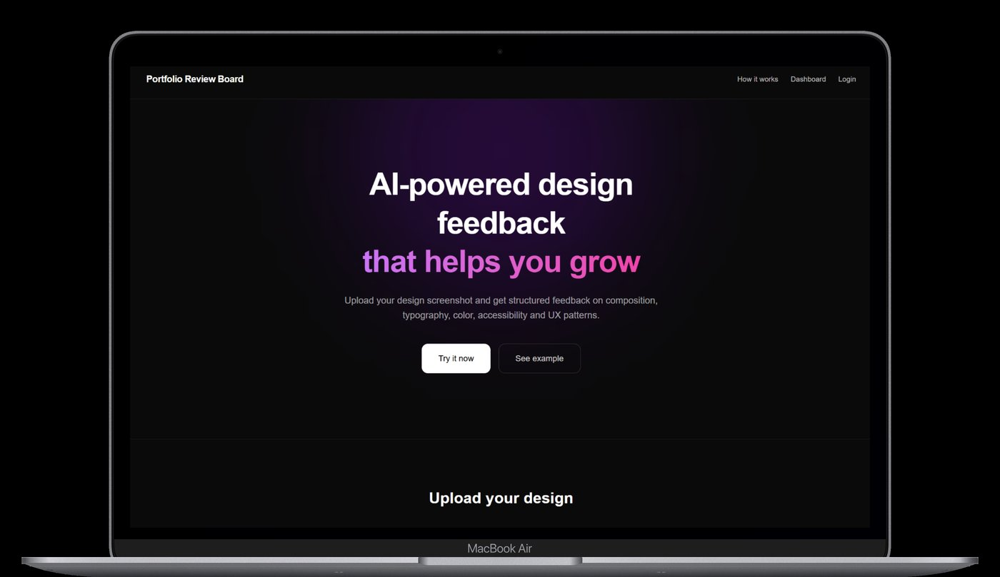
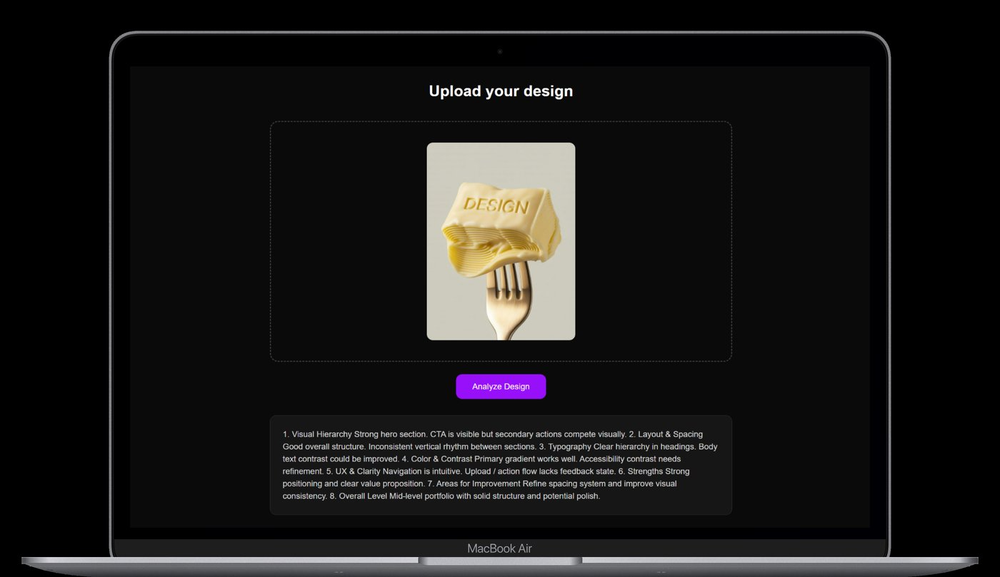
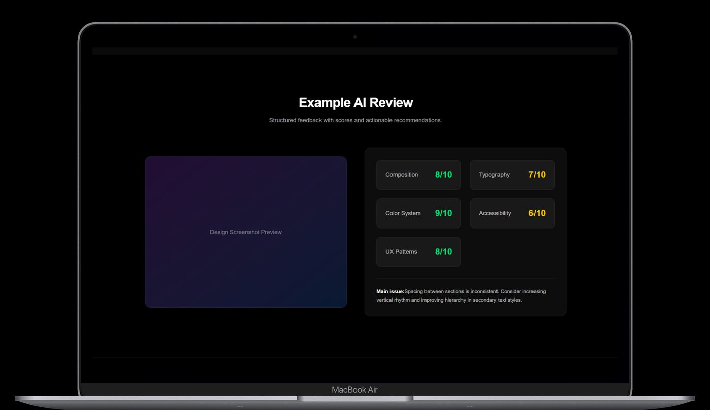

AI Product · Self-initiated
AI-продукты — собственная разработка
Пока дизайн-комьюнити обсуждает, заменит ли AI профессию — я строю инструменты с AI. Figma никуда не уходит, но понимание того, как работают языковые модели, как проектировать AI-интерфейсы и как собирать продукты с Vibe Coding — это уже часть профессионального роста.
Два приложения ниже — не учебные проекты. Это рабочие инструменты, которые решают реальные задачи. И которые уже приносят мне собеседования.
Upload Experience
Минималистичный drag & drop экран. Максимальный фокус на действии без лишнего интерфейсного шума.

AI Structured Analysis
AI разбивает оценку на категории: Visual Hierarchy, Usability, Consistency, Accessibility, Clarity. Каждая включает статус, комментарий и рекомендацию.

Result Dashboard
Структурированный отчёт: общий score из 100, карточки категорий, цветовая система статусов, growth summary.

- Тёмная тема как инструмент фокуса — снижает визуальный шум при аналитических задачах
- Score и карточки категорий как способ сделать субъективную оценку измеримой
- Минимальный onboarding — продукты работают без обучения, с первого действия
- AI как слой поверх интерфейса, не замена ему — пользователь контролирует процесс